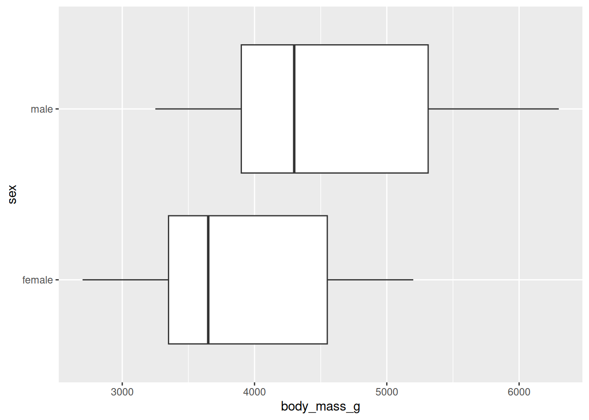
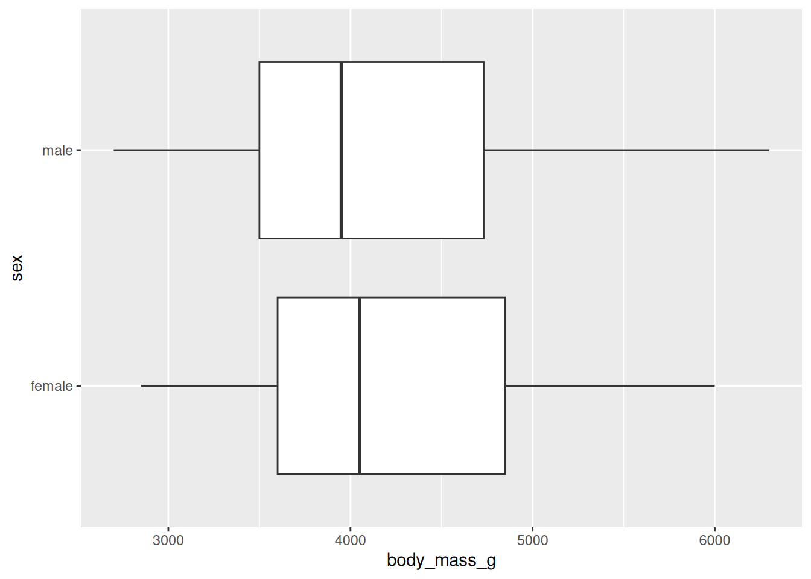
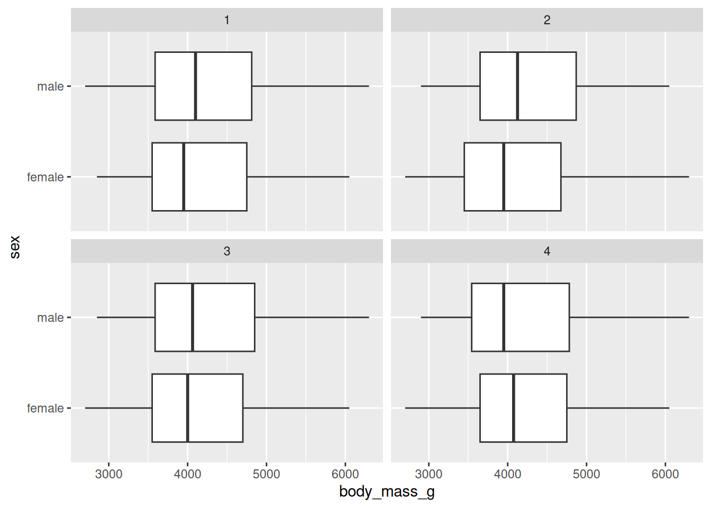
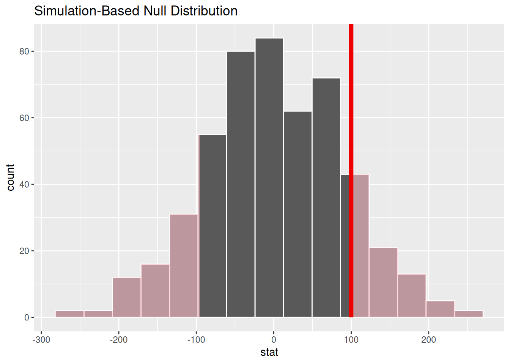

penguins |>
ggplot(mapping = aes(x = body_mass_g, y = sex)) +
geom_boxplot()
Measuring the consistency between a model and data
A hypothesis test using permutation can also be implemented with the infer library! This tutorial will explore how it’s done. As opposed to a confidence interval, the key distinction about a hypothesis test is that the researchers put forth a model for how the data could be generated. In the context of infer, this means that we’ll introduce one new step into the process that we previously used for calculating bootstrap interval. The whole process can be seen below!

The following walkthrough implements a permutation test under the null hypothesis that there is no relationship between the body mass of penguins and their sex. Here is a visualization of the data. Do you think there is a relationship, based on the plot? Or, did we just happen to get a sample where male penguins tended to outweigh female penguins? We will conduct a hypothesis test to form a stronger answer to that question.
Here’s a plot of the data:
penguins |>
ggplot(mapping = aes(x = body_mass_g, y = sex)) +
geom_boxplot()
A function to place before generate() in an infer pipeline where you can specify a null model under which to generate data. The one necessary argument is
null: the null hypothesis. Options include "independence" and "point".Let’s take a look at the data itself to begin!
penguins |>
specify(response = body_mass_g,
explanatory = sex) |>
hypothesize(null = "independence")Response: body_mass_g (numeric)
Explanatory: sex (factor)
Null Hypothesis: in...
# A tibble: 333 × 2
body_mass_g sex
<dbl> <fct>
1 3750 male
2 3800 female
3 3250 female
4 3450 female
5 3650 male
6 3625 female
7 4675 male
8 3200 female
9 3800 male
10 4400 male
# ℹ 323 more rowsObserve:
"point" null hypothesis. Those require adding additional arguments to hypothesize().success argument to specify() and set it to the name of the level you are interested in, in quotes.Let’s say for this example you select as your test statistic a difference in means, \(\bar{x}_{female} - \bar{x}_{male}\). While you can use tools you know - group_by() and summarize() to calculate this statistic, you can also recycle much of the code that you’ll use to build the null distribution with infer.
obs_stat <- penguins |>
specify(response = body_mass_g,
explanatory = sex) |>
calculate(stat = "diff in means")
obs_statResponse: body_mass_g (numeric)
Explanatory: sex (factor)
# A tibble: 1 × 1
stat
<dbl>
1 -683.generate() and calculate()To generate a null distribution of the kind of differences in means that you’d observe in a world where body mass had nothing to do with sex, just add the hypothesis with hypothesize() and the generation mechanism with generate(). Here, we’re simulating 500 experiments and so calculating 500 simulated differences in means! Finally, we use the calculate() step with the correct argument to stat: "diff in means."
null <- penguins |>
specify(response = body_mass_g,
explanatory = sex) |>
hypothesize(null = "independence") |>
generate(reps = 500, type = "permute") |>
calculate(stat = "diff in means")
nullResponse: body_mass_g (numeric)
Explanatory: sex (factor)
Null Hypothesis: in...
# A tibble: 500 × 2
replicate stat
<int> <dbl>
1 1 74.0
2 2 43.7
3 3 94.4
4 4 -13.4
5 5 5.23
6 6 116.
7 7 68.3
8 8 73.1
9 9 -9.48
10 10 -150.
# ℹ 490 more rowsObserve:
null data frame has the number of rows specified in reps; here 500. When it comes to columns, there are has 2: one indicating the replicate number and the other with the statistic (a difference in means).Let’s generate one permuted data frame and then plot our simulated data as if it were our original data.
penguins |>
specify(response = body_mass_g,
explanatory = sex) |>
hypothesize(null = "independence") |>
generate(reps = 1, type = "permute") |>
ggplot(mapping = aes(x = body_mass_g, y = sex)) +
geom_boxplot()
Let’s now visualize four permuted distributions at a time! This seems like it would be much too complex, but a cool layer in ggplot2 called facet_wrap() makes the job very easy. It works like an analog to group_by() in dplyr; rather than calculating a summary statistsic for each group, a plot is made for the data in each group! The replicate variable in the data frame we get after the generate() step proves very useful. It works as our “grouping” variable here and is plugged into vars().
four_plots <- penguins |>
specify(response = body_mass_g,
explanatory = sex) |>
hypothesize(null = "independence") |>
generate(reps = 4, type = "permute") |>
ggplot(mapping = aes(x = body_mass_g, y = sex)) +
geom_boxplot() +
facet_wrap(facet = vars(replicate))
four_plots
Notice that with our permuted distributions, we don’t see a big difference in the two sex distributions when it comes to mass! This should be expected as it’s the assumption we simulated under.
visualize()Let’s go back to the 500 simulated statistics we had earlier. Once you have a collection of test statistics under the null hypothesis (say you saved it as null like we did), it can be useful to visualize that approximation of the null distribution. For that, use the function visualize().
penguins |>
specify(response = body_mass_g,
explanatory = sex) |>
hypothesize(null = "independence") |>
generate(reps = 9, type = "permute") |>
calculate(stat = "diff in means")Response: body_mass_g (numeric)
Explanatory: sex (factor)
Null Hypothesis: in...
# A tibble: 9 × 2
replicate stat
<int> <dbl>
1 1 31.4
2 2 145.
3 3 -149.
4 4 0.728
5 5 33.2
6 6 102.
7 7 -93.3
8 8 -74.1
9 9 35.3 null |>
visualize() +
shade_p_value(100, direction = "both")
Observe:
visualize() expects a data frame of statistics.++.shade_p_value() is a function you can add to shade the part of the null distribution that corresponds to the p-value. The first argument is the observed statistic, which we’ve recorded as 100 here to see the behavior of the function. direction is an argument where you specify if you would like to shade values "less than" or "more than" the observed value, or "both" for a two-tailed p-value.get_p_value() function directly after the calculate() step. It has the same two arguments as shade_p_value()!